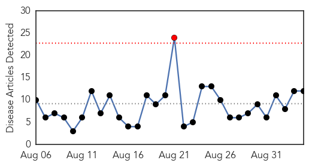
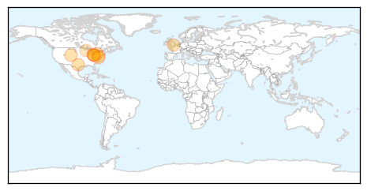

West Nile Virus
30-Day Web Trend
1 alerts, 0 warnings

30-Day Twitter Trend
0 alerts, 0 warnings

Article Locations
Article Confidences

Top Articles:
- 0.987
- West Nile reported in Best South West cities
- 0.983
- West Nile virus found in Monroe County patient
- 0.977
- Windsor-Essex resident has West Nile virus, says health unit
- 0.971
- West Nile reported in Lorain County mostquitoes — The Medina County Gazette
- 0.964
- Elyria mosquitoes test positive for West Nile virus
- 0.956
- Holiday weekend raises West Nile concern in Larimer
- 0.941
- Mosquitoes test positive for West Nile virus in many cities
- 0.930
- London health unit suspects human case of West Nile virus
- 0.893
- Close Call with West Nile for Alexandria
- 0.893
- First human case of West Nile Virus confirmed in Windsor-Essex
- 0.841
- First West Nile virus case in York County for 2015 reported
- 0.751
- Vilas County Bird Tests Positive for West Nile
Top Tweets:
-
No tweets found for Sep 04, 2015
Dengue Fever
30-Day Web Trend
0 alerts, 0 warnings

30-Day Twitter Trend
3 alerts, 0 warnings

Article Locations

Article Confidences

Top Articles:
- 0.985
- Dengue resurgence: New cases alarm Punjab govt
- 0.983
- Taiwan deals with worst summer outbreak of dengue fever - Xinhua
- 0.940
- Taiwan battle worst dengue fever outbreak
- 0.925
- Venezuelans at Risk as Country's Ailing Healthcare System Deteriorates
- 0.896
- Pakistan: Punjab CM displeased with rise in dengue cases in Pindi
- 0.879
- Punjab CM displeased with rise in dengue cases in Pindi - Pakistan
- 0.850
- 55,000 reported cases so far in 2015
- 0.639
- Taiwan cabinet to use reserve fund to aid Tainan’s dengue fever battle
- 0.547
- Feed Your Inner Hypochondriac With Updated Google Health Info
Top Tweets:
-
No tweets found for Sep 04, 2015